Element Properties
This page contains a table listing all Powder Toy elements and some of their properties. Hover over any icon from the Properties column to know what it means. You can click on a property to select it and sort the table to show all elements with that property first. You can also deselect and select more than one property to see all elements that have the selected properties prioritised by selection order. You can click a table header to sort the table by the clicked header. You can use the search feature in your web browser, which is usually accessible with the Ctrl+F keyboard shortcut, to quickly find elements. You can go to the full wiki page about any element by clicking the corresponding green link. It is recommended to hold Ctrl+Shift and then click on the link of the element you want to learn more about, this will open up a dialog box containing information about that element from the wiki instead of leaving this page.
| Element | ID | Colour | Heat Conductivity | Flammability | Hardness | Explosive | Properties |
 [NONE]
[NONE] |
0 | #000000 | 0 | 0 | 1 | No | |
 [DUST]
[DUST] |
1 | #ffe0a0 | 70 | 10 | 30 | No | |
 [WATR]
[WATR] |
2 | #2030d0 | 29 | 0 | 20 | No |     |
 [OIL]
[OIL] |
3 | #404010 | 42 | 20 | 5 | No | |
 [FIRE]
[FIRE] |
4 | #ff1000 | 88 | 0 | 1 | No |   |
 [STNE]
[STNE] |
5 | #a0a0a0 | 150 | 0 | 1 | No | |
 [LAVA]
[LAVA] |
6 | #e05010 | 60 | 0 | 2 | No | |
 [GUN]
[GUN] |
7 | #c0c0d0 | 97 | 600 | 10 | Yes | |
 [NITR]
[NITR] |
8 | #20e010 | 50 | 1000 | 3 | Yes | |
 [CLNE]
[CLNE] |
9 | #ffd010 | 251 | 0 | 1 | No |  |
 [GAS]
[GAS] |
10 | #e0ff20 | 42 | 600 | 1 | No | |
 [C-4]
[C-4] |
11 | #d080e0 | 88 | 1000 | 1 | Yes |  |
 [GOO]
[GOO] |
12 | #804000 | 75 | 0 | 12 | No |  |
 [ICE]
[ICE] |
13 | #a0c0ff | 46 | 0 | 20 | No | |
 [METL]
[METL] |
14 | #404060 | 251 | 0 | 1 | No |  |
 [SPRK]
[SPRK] |
15 | #ffff80 | 251 | 0 | 1 | No | |
 [SNOW]
[SNOW] |
16 | #c0e0ff | 46 | 0 | 20 | No | |
 [WOOD]
[WOOD] |
17 | #c0a040 | 164 | 20 | 15 | No | |
 [NEUT]
[NEUT] |
18 | #20e0ff | 60 | 0 | 0 | No | |
 [PLUT]
[PLUT] |
19 | #407020 | 251 | 0 | 0 | No |  |
 [PLNT]
[PLNT] |
20 | #0cac00 | 65 | 20 | 10 | No | |
 [ACID]
[ACID] |
21 | #ed55ff | 34 | 40 | 0 | No | |
 [VOID]
[VOID] |
22 | #790b0b | 251 | 0 | 0 | No | |
 [WTRV]
[WTRV] |
23 | #a0a0ff | 48 | 0 | 4 | No | |
 [CNCT]
[CNCT] |
24 | #c0c0c0 | 100 | 0 | 2 | No | |
 [DSTW]
[DSTW] |
25 | #1020c0 | 23 | 0 | 20 | No | |
 [SALT]
[SALT] |
26 | #ffffff | 110 | 0 | 1 | No | |
 [SLTW]
[SLTW] |
27 | #4050f0 | 75 | 0 | 20 | No | |
 [DMND]
[DMND] |
28 | #ccffff | 186 | 0 | 0 | No | |
 [BMTL]
[BMTL] |
29 | #505070 | 251 | 0 | 1 | No | |
 [BRMT]
[BRMT] |
30 | #705060 | 211 | 0 | 2 | No | |
 [PHOT]
[PHOT] |
31 | #ffffff | 251 | 0 | 0 | No | |
 [URAN]
[URAN] |
32 | #707020 | 251 | 0 | 0 | No | |
 [WAX]
[WAX] |
33 | #f0f0bb | 44 | 0 | 10 | No | |
 [MWAX]
[MWAX] |
34 | #e0e0aa | 44 | 5 | 2 | No | |
 [PSCN]
[PSCN] |
35 | #805050 | 251 | 0 | 1 | No | |
 [NSCN]
[NSCN] |
36 | #505080 | 251 | 0 | 1 | No | |
 [LN2]
[LN2] |
37 | #80a0df | 70 | 0 | 0 | No | |
 [INSL]
[INSL] |
38 | #9ea3b6 | 0 | 7 | 10 | No | |
 [VACU]
[VACU] |
39 | #303030 | 255 | 0 | 0 | No | |
 [VENT]
[VENT] |
40 | #efefef | 255 | 0 | 0 | No | |
 [RBDM]
[RBDM] |
41 | #cccccc | 240 | 1000 | 1 | Yes | |
 [LRBD]
[LRBD] |
42 | #aaaaaa | 170 | 1000 | 2 | Yes | |
 [NTCT]
[NTCT] |
43 | #505040 | 251 | 0 | 1 | No | |
 [SAND]
[SAND] |
44 | #ffd090 | 150 | 0 | 1 | No | |
 [GLAS]
[GLAS] |
45 | #404040 | 150 | 0 | 0 | No |  |
 [PTCT]
[PTCT] |
46 | #405050 | 251 | 0 | 1 | No | |
 [BGLA]
[BGLA] |
47 | #606060 | 150 | 0 | 0 | No | |
 [THDR]
[THDR] |
48 | #ffffa0 | 1 | 0 | 0 | No | |
 [PLSM]
[PLSM] |
49 | #bb99ff | 5 | 0 | 0 | No | |
 [ETRD]
[ETRD] |
50 | #404040 | 251 | 0 | 1 | No | |
 [NICE]
[NICE] |
51 | #c0e0ff | 46 | 0 | 20 | No | |
 [NBLE]
[NBLE] |
52 | #eb4917 | 106 | 0 | 1 | No | |
 [BTRY]
[BTRY] |
53 | #858505 | 251 | 0 | 1 | No | |
 [LCRY]
[LCRY] |
54 | #505050 | 251 | 0 | 1 | No | |
 [STKM]
[STKM] |
55 | #ffe0a0 | 0 | 0 | 0 | No | |
 [SWCH]
[SWCH] |
56 | #103b11 | 251 | 0 | 1 | No | |
 [SMKE]
[SMKE] |
57 | #222222 | 88 | 0 | 1 | No | |
 [DESL]
[DESL] |
58 | #440000 | 42 | 2 | 5 | No | |
 [COAL]
[COAL] |
59 | #222222 | 200 | 0 | 20 | No | |
 [LOXY]
[LOXY] |
60 | #80a0ef | 70 | 5000 | 0 | No | |
 [OXYG]
[OXYG] |
61 | #80a0ff | 70 | 0 | 0 | No | |
 [INWR]
[INWR] |
62 | #544141 | 251 | 0 | 1 | No | |
 [YEST]
[YEST] |
63 | #eee0c0 | 70 | 15 | 30 | No | |
 [DYST]
[DYST] |
64 | #bbb0a0 | 70 | 20 | 30 | No | |
 [THRM]
[THRM] |
65 | #a08090 | 211 | 0 | 2 | No | |
 [GLOW]
[GLOW] |
66 | #445464 | 44 | 0 | 2 | No | |
 [BRCK]
[BRCK] |
67 | #808080 | 251 | 0 | 1 | No | |
 [CFLM]
[CFLM] |
68 | #8080ff | 88 | 0 | 1 | No | |
 [FIRW]
[FIRW] |
69 | #ffa040 | 70 | 0 | 30 | No | |
 [FUSE]
[FUSE] |
70 | #0a5706 | 200 | 0 | 20 | No | |
 [FSEP]
[FSEP] |
71 | #63ad5f | 70 | 0 | 30 | No | |
 [AMTR]
[AMTR] |
72 | #808080 | 70 | 0 | 0 | No | |
 [BCOL]
[BCOL] |
73 | #333333 | 150 | 0 | 2 | No | |
 [PCLN]
[PCLN] |
74 | #3b3b0a | 251 | 0 | 1 | No | |
 [HSWC]
[HSWC] |
75 | #3b0a0a | 251 | 0 | 1 | No | |
 [IRON]
[IRON] |
76 | #707070 | 251 | 0 | 50 | No | |
 [MORT]
[MORT] |
77 | #e0e0e0 | 60 | 0 | 0 | No | |
 [LIFE]
[LIFE] |
78 | #0cac00 | 40 | 0 | 0 | No | |
 [DLAY]
[DLAY] |
79 | #753590 | 0 | 0 | 1 | No | |
 [CO2]
[CO2] |
80 | #666666 | 88 | 0 | 0 | No | |
 [DRIC]
[DRIC] |
81 | #e0e0e0 | 2 | 0 | 20 | No | |
 [BUBW]
[BUBW] |
82 | #2030d0 | 29 | 0 | 20 | No | |
 [STOR]
[STOR] |
83 | #50dfdf | 0 | 0 | 1 | No | |
 [PVOD]
[PVOD] |
84 | #792020 | 251 | 0 | 1 | No | |
 [CONV]
[CONV] |
85 | #0aab0a | 251 | 0 | 1 | No | |
 [CAUS]
[CAUS] |
86 | #80ffa0 | 70 | 0 | 0 | No | |
 [LIGH]
[LIGH] |
87 | #ffffc0 | 0 | 0 | 1 | No | |
 [TESC]
[TESC] |
88 | #707040 | 251 | 0 | 1 | No | |
 [DEST]
[DEST] |
89 | #ff3311 | 150 | 0 | 0 | No | |
 [SPNG]
[SPNG] |
90 | #ffbe30 | 251 | 20 | 30 | No | |
 [RIME]
[RIME] |
91 | #cccccc | 100 | 0 | 30 | No | |
 [FOG]
[FOG] |
92 | #aaaaaa | 100 | 0 | 30 | No | |
 [BCLN]
[BCLN] |
93 | #ffd040 | 251 | 0 | 12 | No | |
 [LOVE]
[LOVE] |
94 | #ff30ff | 40 | 0 | 0 | No | |
 [DEUT]
[DEUT] |
95 | #00153f | 251 | 0 | 20 | No | |
 [WARP]
[WARP] |
96 | #101010 | 100 | 0 | 30 | No | |
 [PUMP]
[PUMP] |
97 | #0a0a3b | 0 | 0 | 10 | No | |
 [FWRK]
[FWRK] |
98 | #666666 | 100 | 0 | 1 | No | |
 [PIPE]
[PIPE] |
99 | #444444 | 0 | 0 | 0 | No | |
 [FRZZ]
[FRZZ] |
100 | #c0e0ff | 46 | 0 | 20 | No | |
 [FRZW]
[FRZW] |
101 | #1020c0 | 29 | 0 | 20 | No | |
 [GRAV]
[GRAV] |
102 | #202020 | 70 | 10 | 30 | No | |
 [BIZR]
[BIZR] |
103 | #00ff77 | 29 | 0 | 20 | No | |
 [BIZG]
[BIZG] |
104 | #00ffbb | 42 | 0 | 1 | No | |
 [BIZS]
[BIZS] |
105 | #00e455 | 251 | 0 | 1 | No | |
 [INST]
[INST] |
106 | #404039 | 251 | 0 | 1 | No | |
 [ISOZ]
[ISOZ] |
107 | #aa30d0 | 29 | 0 | 0 | No | |
 [ISZS]
[ISZS] |
108 | #662089 | 251 | 0 | 1 | No | |
 [PRTI]
[PRTI] |
109 | #eb5917 | 0 | 0 | 0 | No | |
 [PRTO]
[PRTO] |
110 | #0020eb | 0 | 0 | 0 | No | |
 [PSTE]
[PSTE] |
111 | #aa99aa | 29 | 0 | 20 | No | |
 [PSTS]
[PSTS] |
112 | #776677 | 29 | 0 | 20 | No | |
 [ANAR]
[ANAR] |
113 | #ffffee | 70 | 0 | 30 | No | |
 [VINE]
[VINE] |
114 | #079a00 | 65 | 20 | 10 | No | |
 [INVS]
[INVS] |
115 | #00cccc | 164 | 0 | 15 | No | |
 [EQVE]
[EQVE] |
116 | #ffe0a0 | 70 | 0 | 30 | No | |
 [SPWN2]
[SPWN2] |
117 | #aaaaaa | 0 | 0 | 1 | No | |
 [SPWN]
[SPWN] |
118 | #aaaaaa | 0 | 0 | 1 | No | |
 [SHLD]
[SHLD] |
119 | #aaaaaa | 0 | 0 | 1 | No | |
 [SHD2]
[SHD2] |
120 | #777777 | 0 | 0 | 1 | No | |
 [SHD3]
[SHD3] |
121 | #444444 | 0 | 0 | 1 | No | |
 [SHD4]
[SHD4] |
122 | #212121 | 0 | 0 | 1 | No | |
 [LOLZ]
[LOLZ] |
123 | #569212 | 40 | 0 | 0 | No | |
 [WIFI]
[WIFI] |
124 | #40a060 | 0 | 0 | 2 | No | |
 [FILT]
[FILT] |
125 | #000056 | 251 | 0 | 1 | No |  |
 [ARAY]
[ARAY] |
126 | #ffbb00 | 0 | 0 | 1 | No | |
 [BRAY]
[BRAY] |
127 | #ffffff | 251 | 0 | 1 | No | |
 [STK2]
[STK2] |
128 | #6464ff | 0 | 0 | 0 | No | |
 [BOMB]
[BOMB] |
129 | #fff288 | 29 | 0 | 20 | No | |
 [C-5]
[C-5] |
130 | #2050e0 | 88 | 0 | 1 | No | |
 [SING]
[SING] |
131 | #242424 | 70 | 0 | 0 | No | |
 [QRTZ]
[QRTZ] |
132 | #aadddd | 3 | 0 | 0 | No | |
 [PQRT]
[PQRT] |
133 | #88bbbb | 3 | 0 | 0 | No | |
 [EMP]
[EMP] |
134 | #66aaff | 121 | 0 | 3 | No | |
 [BREL]
[BREL] |
135 | #707060 | 211 | 0 | 2 | No | |
 [ELEC]
[ELEC] |
136 | #dfefff | 251 | 0 | 0 | No | |
 [ACEL]
[ACEL] |
137 | #0099cc | 251 | 0 | 1 | No | |
 [DCEL]
[DCEL] |
138 | #99cc00 | 251 | 0 | 1 | No | |
 [TNT]
[TNT] |
139 | #c05050 | 88 | 0 | 1 | No | |
 [IGNC]
[IGNC] |
140 | #c0b050 | 88 | 0 | 1 | No | |
 [BOYL]
[BOYL] |
141 | #0a3200 | 42 | 0 | 1 | No | |
 [GEL]
[GEL] |
142 | #ff9900 | 29 | 0 | 20 | No | |
 [TRON]
[TRON] |
143 | #a9ff00 | 40 | 0 | 0 | No | |
 [TTAN]
[TTAN] |
144 | #909090 | 251 | 0 | 50 | No | |
 [EXOT]
[EXOT] |
145 | #247bfe | 250 | 0 | 2 | No | |
 [BRAN]
[BRAN] |
146 | #cccc00 | 40 | 0 | 0 | No | |
 [EMBR]
[EMBR] |
147 | #fff288 | 29 | 0 | 20 | No | |
 [HYGN]
[HYGN] |
148 | #5070ff | 251 | 0 | 0 | No | |
 [SOAP]
[SOAP] |
149 | #f5f5dc | 29 | 0 | 20 | No | |
 [BHOL]
[BHOL] |
150 | #202020 | 186 | 0 | 0 | No | |
 [WHOL]
[WHOL] |
151 | #ffffff | 186 | 0 | 0 | No | |
 [MERC]
[MERC] |
152 | #736b6d | 251 | 0 | 20 | No |  |
 [PBCN]
[PBCN] |
153 | #3b1d0a | 251 | 0 | 12 | No | |
 [GPMP]
[GPMP] |
154 | #0a3b3b | 0 | 0 | 1 | No | |
 [CLST]
[CLST] |
155 | #e4a4a4 | 70 | 0 | 2 | No | |
 [WWLD]
[WWLD] |
156 | #ffcc00 | 250 | 0 | 0 | No | |
 [GBMB]
[GBMB] |
157 | #1144bb | 29 | 0 | 20 | No | |
 [FIGH]
[FIGH] |
158 | #ffe0a0 | 0 | 0 | 0 | No | |
 [FRAY]
[FRAY] |
159 | #00bbff | 0 | 0 | 1 | No | |
 [RPEL]
[RPEL] |
160 | #99cc00 | 0 | 0 | 1 | No | |
 [PPIP]
[PPIP] |
161 | #444466 | 0 | 0 | 0 | No | |
 [DTEC]
[DTEC] |
162 | #fd9d18 | 0 | 0 | 1 | No | |
 [DMG]
[DMG] |
163 | #88ff88 | 29 | 0 | 20 | No | |
 [TSNS]
[TSNS] |
164 | #fd00d5 | 0 | 0 | 1 | No | |
 [VIBR]
[VIBR] |
165 | #005000 | 251 | 0 | 0 | No | |
 [BVBR]
[BVBR] |
166 | #005000 | 164 | 0 | 0 | No | |
 [CRAY]
[CRAY] |
167 | #bbff00 | 0 | 0 | 1 | No | |
 [PSTN]
[PSTN] |
168 | #aa9999 | 0 | 0 | 0 | No | |
 [FRME]
[FRME] |
169 | #999988 | 0 | 0 | 0 | No | |
 [GOLD]
[GOLD] |
170 | #dcad2c | 251 | 0 | 0 | No | |
 [TUNG]
[TUNG] |
171 | #505050 | 251 | 0 | 1 | No | |
 [PSNS]
[PSNS] |
172 | #db2020 | 0 | 0 | 1 | No | |
 [PROT]
[PROT] |
173 | #990000 | 61 | 0 | 0 | No | |
 [VIRS]
[VIRS] |
174 | #fe11f6 | 251 | 0 | 20 | No | |
 [VRSS]
[VRSS] |
175 | #d408cd | 251 | 0 | 1 | No | |
 [VRSG]
[VRSG] |
176 | #fe68fe | 251 | 500 | 0 | No | |
 [GRVT]
[GRVT] |
177 | #00ee76 | 61 | 0 | 1 | No | |
 [DRAY]
[DRAY] |
178 | #ffaa22 | 0 | 0 | 1 | No | |
 [CRMC]
[CRMC] |
179 | #d6d1d4 | 35 | 0 | 5 | No | |
 [HEAC]
[HEAC] |
180 | #cb6351 | 251 | 0 | 0 | No | |
 [SAWD]
[SAWD] |
181 | #f0f0a0 | 70 | 10 | 30 | No | |
 [POLO]
[POLO] |
182 | #506030 | 251 | 0 | 0 | No | |
 [RFRG]
[RFRG] |
183 | #72d2d4 | 3 | 0 | 20 | No | |
 [RFGL]
[RFGL] |
184 | #84c2cf | 3 | 0 | 20 | No | |
 [LSNS]
[LSNS] |
185 | #336699 | 0 | 0 | 1 | No |